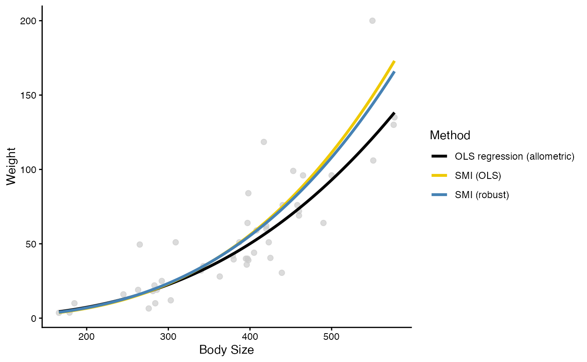
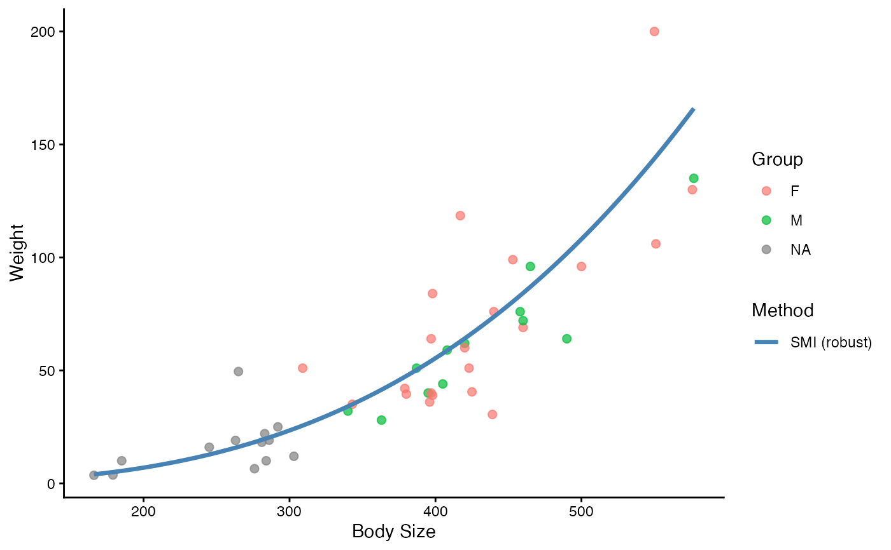
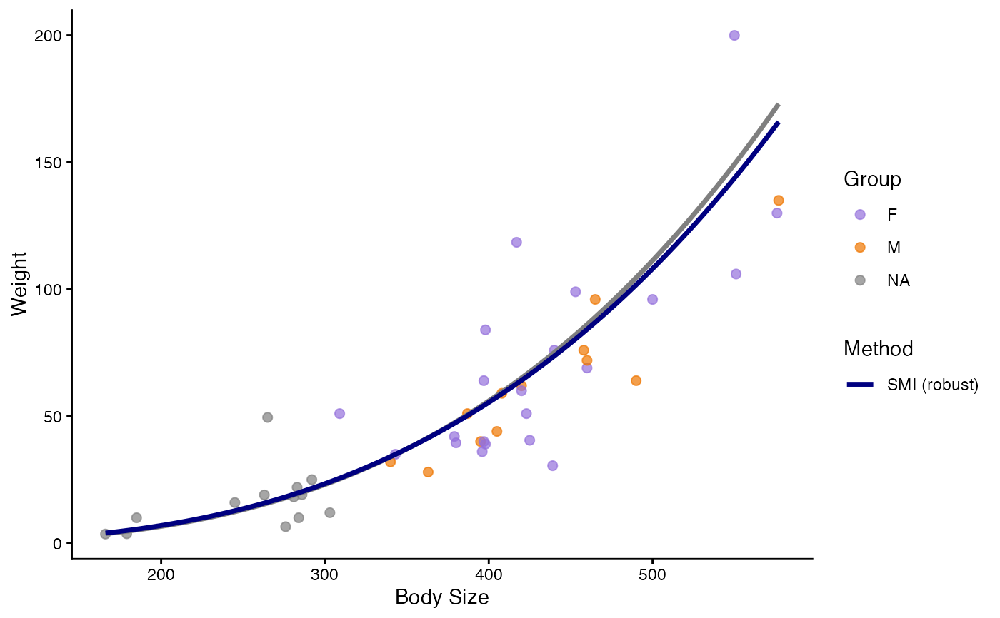
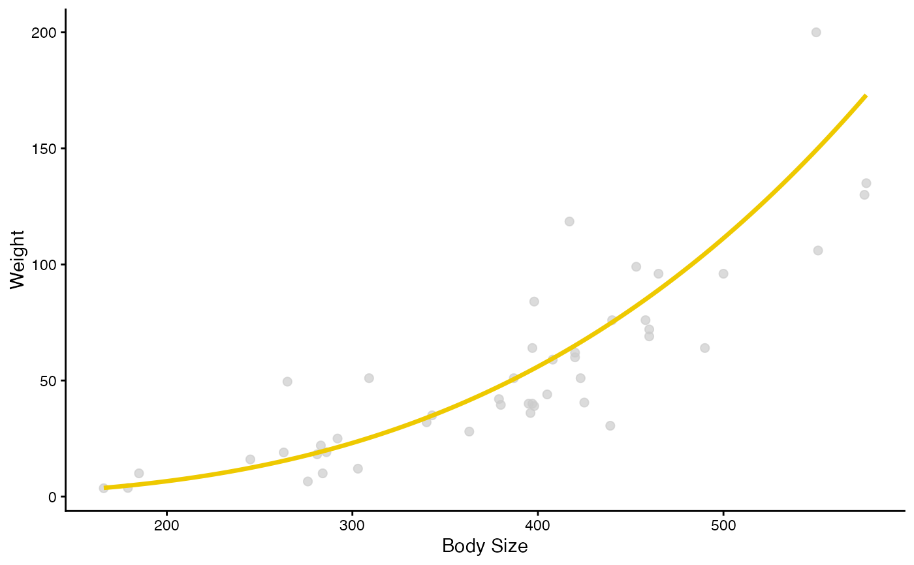

Visualize and compare body condition index (BCI) estimation methods by
plotting raw, observed body size–weight data alongside BCI estimated fits.
The function uses the bci() wrapper to ensure consistency between
analytical and visual outputs.
Usage
plot_bci(
data,
body_size,
weight,
method = c("resid_ols", "smi_ols", "smi_rob"),
relation = "allometric",
group = NULL,
group_colours = NULL,
method_colours = NULL,
x_lab = "Body Size",
y_lab = "Weight",
group_lab = "Group",
method_lab = "Method",
legend = TRUE,
return_predictions = FALSE
)Arguments
- data
tibble/dataframe containing a standard body size variable and the corresponding weight for each individual of one animal species
- body_size
name of standard body size variable (e.g., snout-vent-length of reptiles, tarsus length of birds, length from the snout to the base of the tail for mammals, etc.)
- weight
name of weight variable (e.g., mass of the animal)
- method
method used to estimate body condition, either residuals from an OLS regression (
"resid_ols") or scaled mass index using an OLS ("smi_ols") or robust regression ("smi_rob"). Provide one or a list of these.- relation
an argument to specify whether or not the relationship between weight and body size variables are assumed to be allometric (
"allometric") or linear ("linear"). If allometric, both variables are log-transformed. Default is"allometric. Biologically speaking, most animals exhibit a allometric relationship between their weight and body size measurements, this is the method that is appropriate.- group
Optional column in
dataspecifying grouping of raw points (e.g., sex, population). Default isNULL(all points treated as one group) and plotted in light grey.- group_colours
Optional named vector specifying colours for each group of raw points. Names must match the values in the
groupcolumn. IfNULL, default ggplot2 colours are used.- method_colours
Optional named vector specifying colours for the BCI methods. Names must match the method labels used in the plot:
"OLS regression (linear)","OLS regression (allometric)","SMI (OLS)","SMI (robust)". Defaults are dark grey, yellow, and blue.- x_lab
Label for the x-axis. The default is
"Body Size".- y_lab
Label for the y-axis. The default is
"Weight".- group_lab
Label for the grouping variable, if provided, enclosed in quotations. The default is
"Group".- method_lab
Label for the method of calculating body condition enclosed in quotations. The default is
"Method".- legend
Logical indicating whether to display the legend. Default is
TRUE.- return_predictions
Either
TRUEorFALSEto indicate whether or not you would like the predictions calculated to plot the lines returned to you, or not. The default isFALSE.
Value
A ggplot object. If return_predictions = TRUE, a list containing
the plot, the data used to generate the plot, and the predicted values
used to draw the fitted lines is returned.
Details
This function is intended for exploratory and comparative visualization of body condition estimation methods. When multiple BCI methods are shown, fitted lines are coloured by method, and points can optionally be split and coloured by a grouping variable.
Examples
data("gartersnake")
# Basic plot with all methods
plot_bci(
gartersnake,
svl_mm,
mass_g,
method = c("resid_ols", "smi_ols", "smi_rob")
)

# Plot only BCI using the SMI method estimated with an robust regression
# and group your raw data by sex
plot_bci(
gartersnake,
svl_mm,
mass_g,
method = c("smi_rob"),
group = sex
)

# Plot BCI using two SMI methods &
# have custom colours for groups and methods
plot_bci(
gartersnake,
svl_mm,
mass_g,
method = c("smi_ols", "smi_rob"),
group = sex,
group_colours = c("M" = "darkorange2", "F" = "mediumpurple"),
method_colours = c("OLS residuals" = "black", "SMI (robust)" = "navy")
)

# Plot BCI using the SMI method estimated with an robust regression
# and hide the legend
plot_bci(
gartersnake,
svl_mm,
mass_g,
method = c("smi_ols"),
legend = FALSE
)
